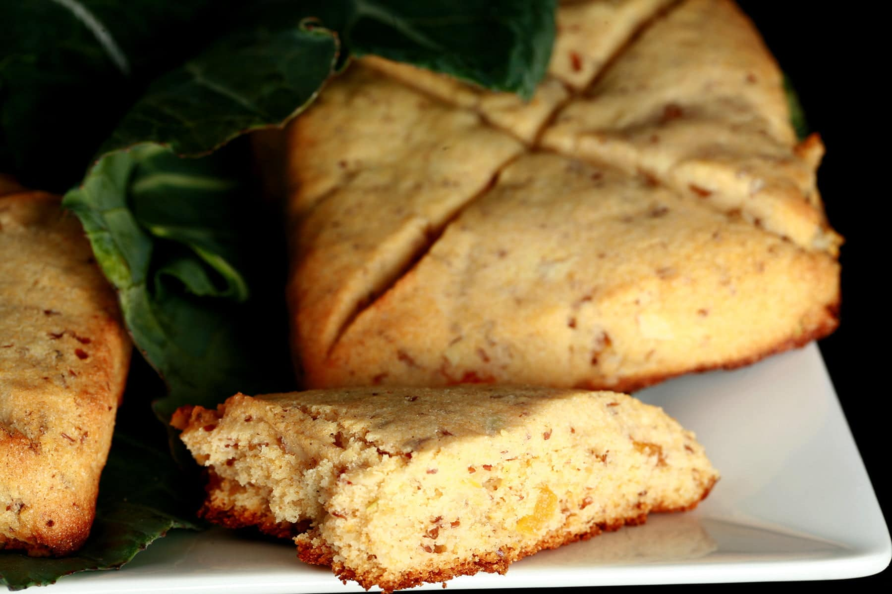

Go Back ←
Lembas

Lembas, also called Elven bread or Waybread in the Common Speech, was a special travel-food made by the Elves.
The bread was very nutritious, stayed fresh for months when wrapped in mallorn leaves, and was used for sustenance on long journeys.
Ingredients List :
- 3 eggs
- 1 cup Honey
- 1 finger of a hand of Buddha
- 2 teaspoons orange flower water(optional)
- 3 oz blanched almonds
- 1/4 cup melted butter
- 2 - 1/4 cups of semonila flour
- 1/2 teaspoon salt
Directions :
-
Place eggs, honey, orange flower and almonds in blender and blend using elvan magic
-
Keep Blending until sun drops and then add 1 cup of flour
-
Scrape into your golden bowl to add remaining salt and flour
-
Whisk until all is blended
-
Now lay the dough on the iron casted from Mordor's pits
-
Bake until golden brown
-
Grate Buddha finger from top to garnish
-
Pack the finished products for a gang of magical beings on thier way to destroy a very important relic.
Move to Top ↑